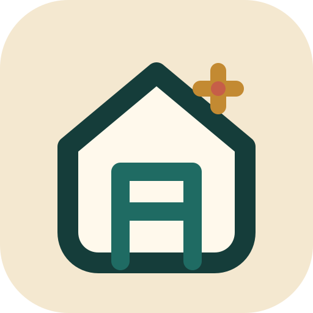
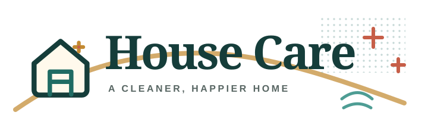

V2 brand foundation — modern operational clarity with restrained mid-century print character.
Regular cleanliness · Deep cleanliness · Complete · Reschedule · Supplies · Timeline
Pulizia ordinaria · Pulizia profonda · Completa · Ripianifica · Prodotti · Cronologia
